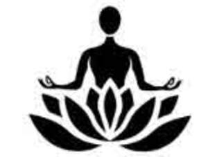

Trade Mark Journal No.2025/052 26 December 2025
UK00004310182 14 December 2025 (35,41,44)

- Class 35
- Advertising the goods and services of online vendors via a searchable online guide; Online retail store services relating to clothing; Online advertising; Online marketing; Online ordering services; Online retail services relating to jewelry; Online community management services.
- Class 41
- Coaching services; Training or education services in the field of life coaching; Business mentoring services; Business training services; Coaching; Training and education services; Education and training services; Life coaching (training); Meditation training; Training in yoga; Education and training; Organisation of training; Health and fitness training; Training services; Teaching of meditation practices; Training services for personnel; Health club services; Providing fitness and exercise facilities; Physical fitness assessment services for training purposes; Education services relating to yoga; Education services relating to nutrition; Conducting physical fitness conditioning classes; Physical education services; Yoga instruction; Education services relating to meditation; Bodywork therapy instruction; Pilates instruction; Instruction in group exercise; Exercise classes; Exercise and fitness classes; Conducting classes in exercise; Arranging and conducting of workshops and seminars in self-awareness; Self-awareness courses [instruction]; Conducting workshops and seminars in art appreciation; Conducting of workshops and seminars in art appreciation; Conducting workshops and seminars in personal awareness; Arranging of workshops; Conducting courses, seminars and workshops; Workshops for training purposes; Arranging and conducting of seminars and workshops; Arranging and conducting of workshops and seminars; Conducting workshops and seminars in self awareness; Workshops (Arranging and conducting of -) [training]; Arranging and conducting of workshops [training]; Conducting educational workshops in the field of business; Arranging, conducting and organisation of workshops; Workshops for educational purposes; Arranging and conducting of workshops; Arranging and conducting workshops; Seminars; Arranging of seminars; Organisation of Webinars; Organisation of continuing educational seminars; Arranging and conducting of educational seminars; Arranging, conducting and organisation of seminars; Conducting of classes.
- Class 44
- Health spa services; Mental health services; Beauty care services provided by a health spa; Health care relating to therapeutic massage; Health center services; Health care relating to naturopathy; Health clinic services; Health care in the nature of health maintenance organizations; Mental health screening services; Health resort services [medical]; Health care relating to hydrotherapy; Health centers; Health consultancy; Health counselling; Health care; Cosmetic body care services provided by health spas; Beauty spa services; Health care relating to acupuncture; Health care consultancy services [medical]; Health screening services; Occupational health consultancy; Medical spa services; Spa services; Consulting services relating to health care; Consultancy services relating to health care; Lifestyle counseling and consultancy for medical purposes; Beauty care services; Professional consultancy relating to health care; Consultancy in the field of body and beauty care; Human hygiene and beauty care; Beauty treatment services; Beauty care; Aromatherapy services.
melissa Horrocks